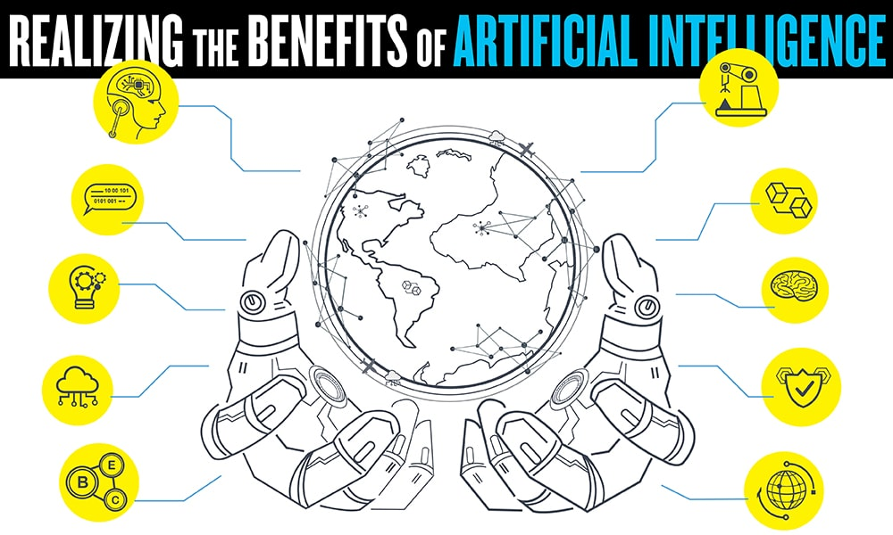

Artificial Intelligence (AI)
links
Artificial Intelligence (AI) is on the rise – and not just in the form of smartphones or self-driving cars. What was just theory 10 years ago has now become reality, and there are no signs of it slowing down – especially since AI spending is expected to reach $46 billion by 2020, according to Forbes.
However, AI is not just about building humanoid robots. By its very definition, artificial intelligence involves programming machines in a way that provides them the ability to think on their own and to keep learning – exactly like humans. We already use, and benefit, from AI in a number of ways; think personalized results with Google, virtual assistants like Siri or Alexa that do our bidding through simple voice commands or even your basic GPS for calculating optimal routes.
Beyond our daily lives, AI is paving the way for new technologies in the world of business. For modern businesses, incorporating AI or related technologies such as blockchain, into their products or operations is the next step in evolution. For example, around 61% of marketing professionals surveyed by MemSQL pointed to AI and machine learning as their company’s most significant data initiative in 2019.
There are a number of advantages and disadvantages of artificial intelligence, including task automation, cost saving, and automated communication. However, common risks associated with AI include how it will raise unemployment, advance dangerous autonomous weapons systems, etc.
Read on to see where AI might stand in the future, and how related technologies like blockchain – known to be one of the most secure, democratic, and tamper-proof ways of storing information – will converge for better outcomes.
